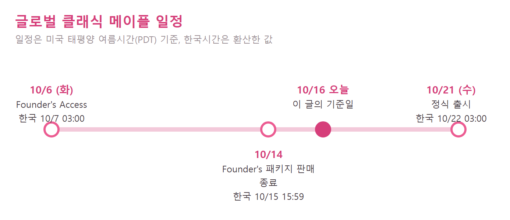
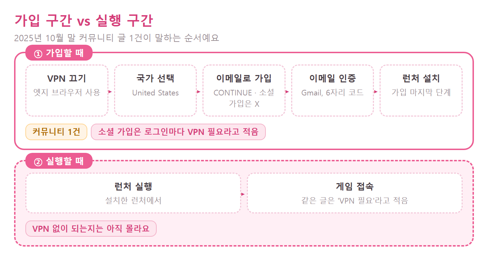
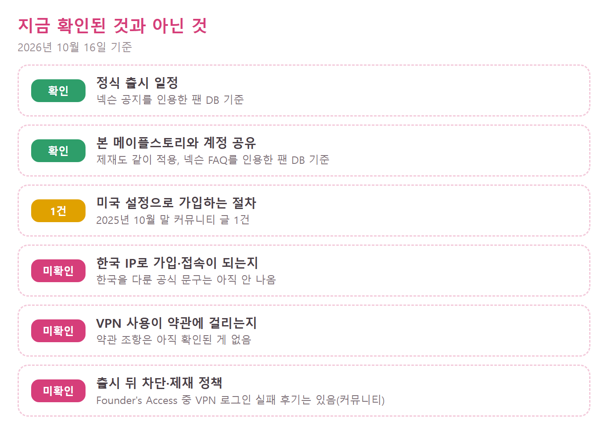

글로벌 클래식 메이플(글클메) VPN 없이 플레이 될까? 가입 구간과 실행 구간, 현재 확인된 것만 정리
글클메 가입하려는데 VPN 없이 되는지 검색해 보신 분들 많으시죠. 2026년 10월 16일 기준으로, 글클메를 VPN 없이 플레이할 수 있다고 확인된 근거는 없습니다. 가입 방법을 적은 커뮤니티 후기 1건이 있긴 한데, 그 후기도 런처 실행과 접속에는 VPN이 필요하다고 적혀 있더라고요. 그래서 '가입 구간'과 '실행 구간'을 나눠서 어디까지 알려졌고 어디부터 아직 모르는지 정리해 볼게요.
먼저 위험부터 짚고 갈게요. 글클메 계정은 본 메이플스토리와 공유돼서 한쪽이 제재를 받으면 양쪽에 적용돼요. 지역 설정을 바꿔 가입하거나 VPN을 쓰는 일이 약관에서 어떻게 다뤄지는지는 아직 알려진 게 없어서, 가능하다고도 안전하다고도 말씀드릴 수 없어요.
글클메는 언제 열리나요?
글로벌 클래식 메이플(Global MapleStory Classic World, 글클메)은 10월 6일에 Founder's Access가 시작됐고, 정식 출시는 10월 21일(수)입니다. 현지 11:00 PDT 기준이라 한국시간으로는 다음 날 새벽 3시예요.
- Founder's Access: 현지 10월 6일(화) 11:00, 한국시간 10월 7일 03:00
- 정식 출시(Grand Launch): 현지 10월 21일(수) 11:00, 한국시간 10월 22일 03:00

현지 시각과 한국시간을 같이 놓은 일정이에요
도해: 직접 제작 · 일정 데이터는 넥슨 공지를 인용한 팬 DB 기준
설치 경로는 어떻게 되나요?
설치 경로는 Nexon Launcher와 Steam 두 가지이고, 넥슨 공지를 인용한 팬 DB 기준으로 둘 다 Windows와 macOS를 지원해요. 넥슨 쪽은 런처의 MapleStory 라이브러리에서 Classic World 토글을 켠 뒤 내려받고, Steam 쪽은 Steam의 MapleStory 항목에 묶인 빌드로 실행하면서 넥슨 계정을 Steam 프로필에 연동해야 해요. 여기서 헷갈리기 쉬운 게 있는데요, 두 경로가 공식이라는 것과 한국 계정·한국 IP에서 된다는 건 서로 다른 이야기예요. Steam도 넥슨 계정을 거치니 Steam으로 받으면 VPN이 필요 없는지, 한국에서 결제와 지역 가격이 어떻게 적용되는지는 알려진 게 없어요.
왜 VPN 이야기가 따라붙나요?
일반 글로벌 메이플스토리는 한국을 포함한 일부 지역이 VPN 없이는 접속되지 않는다는 비공식 팬 가이드가 있어서, 글클메도 같을 거라는 짐작이 도는 거예요. 다만 그 가이드는 2022년에 갱신된 것이고, 클래식 월드에 같은 제한이 걸리는지는 확인된 게 없어요. VPN·부스터 업체 글도 한국 접속이 막혀 있다고 쓰지만 판매 목적이라 근거로 삼기는 어렵습니다.
커뮤니티에서 도는 가입 방법은 어떤가요?
이 절은 2025년 10월 28일에 올라온 디시인사이드 후기 1건의 내용이에요. 정식 출시보다 1년쯤 앞선 당시 후기라 지금은 가입 화면이 달라졌을 수도 있고, 직접 해 본 후기가 아니라 커뮤니티에서 도는 얘기라 참고만 해 주세요. 시도하기 전에 계정 공유와 약관 문제부터 다시 떠올려 주세요.
가입 구간만 놓고 보면, 당시 후기는 VPN을 끈 채 엣지 브라우저로 넥슨 아메리카 영문 가입 페이지에 들어가 국가를 United States로 고르라고 적혀 있더라고요. 한국을 고르면 가입이 안 된다는 안내가 뜬다고 하고요.
- 브라우저는 크롬이 아니라 엣지를 쓴다고 해요(크롬은 안 된다는 주장이에요)
- 구글·페이스북·애플 소셜 가입 버튼 말고 이메일 가입(CONTINUE)으로 하라고 하고, 소셜 가입은 로그인할 때마다 브라우저에 VPN을 켜야 한다고 적었어요
- 생년월일과 이메일을 넣는데 Gmail을 권하고, 영문 이름은 아무거나 괜찮다고 해요
- 두 번째 약관 칸을 체크하고, 메일로 온 6자리 인증 코드를 VERIFY에 넣으면 끝나요
- 마지막으로 런처를 설치해요
눈여겨볼 점은 그 후기가 왜 가입할 때만 VPN을 끄는지, 한국을 고르면 막히는 게 IP 때문인지 국가 항목 때문인지를 따로 설명하지 않는다는 거예요. 그래서 이 순서가 한국에서 VPN 없이 통한다는 뜻인지, 그냥 가입 화면만 통과하는 요령인지는 갈라서 볼 수 없어요.

가입 구간과 실행 구간을 나눠 본 흐름이에요
도해: 직접 제작 · 단계 내용은 2025년 10월 28일 디시인사이드 글 1건 기준
중요한 건 그 후기가 런처 실행과 접속은 VPN을 설정한 뒤에 하라고 적었다는 점이에요. 그러니까 'VPN 없이 가입'은 이렇게들 한다더라 하는 이야기일 뿐, 'VPN 없이 플레이'의 근거가 아니에요. '가입은 미국 설정, 실행은 VPN'도 제가 권하는 방법이 아니라 그렇게 한다는 후기 1건입니다.
그래서 VPN 없이 플레이는 확인됐나요?
VPN 없이 플레이할 수 있다는 확인은 지금 없고, 안 된다는 공식 확인도 없습니다. 한국 IP에서 가입·접속이 되는지를 다룬 공식 문구는 아직 확인된 게 없어요. 방법별로 나누면 이렇게 돼요.
| 방법 | 구분 | 판단 |
|---|---|---|
| 미국 설정 가입 후 런처는 VPN으로 실행 | 비공식(2025년 10월 후기 1건) | 근거 약함 |
| 가입만 VPN 없이, 실행은 VPN | 비공식(후기 1건) | 근거 약함, VPN 없는 플레이 아님 |
| Steam으로 받아 실행 | 공식 판매·실행 경로 | 한국 계정·IP는 판단 불가 |
| 한국 IP로 VPN 없이 접속 | 공식 근거 없음 | 가능이라고 쓸 수 없음 |

초록은 공지를 인용한 팬 DB, 노랑은 후기 1건, 분홍은 아직 모르는 것이에요
도해: 직접 제작 · 넥슨 공지를 인용한 팬 DB와 2025년 10월 후기 1건 기준
정식 출시는 아직이지만, Founder's Access가 열린 지금도 VPN 서버 지역에 따라 로그인이 막혔다는 커뮤니티 글이 올라오고 있어요. 넥슨의 공식 설명은 아직 없고, 지역 정책은 출시 전후로 바뀔 수 있어서 이 글의 기준일은 10월 16일로 못 박아 둘게요.
계정 제재는 어떻게 되나요?
글클메와 본 메이플스토리는 계정을 공유해서, 한쪽에서 받은 제재가 양쪽에 적용돼요. 넥슨 FAQ를 인용한 팬 DB에 나와 있는 내용이고, 본 메이플 계정으로 같이 들어가는 분들은 이 점이 제일 무겁습니다.
| 항목 | 글클메와 본 메이플스토리 |
|---|---|
| 계정 | 하나를 같이 씀 |
| 제재 | 한쪽에서 받으면 양쪽에 적용 |
| NX 잔액 | 공유 |
선례도 하나 있어요. 2026년 4월 22일, 넥슨은 허가 없이 폐쇄 테스트에 들어간 계정을 영구 정지했다고 알렸어요. 경위나 VPN과의 관계는 알려진 게 없어서 지금 상황과 바로 이어 붙이긴 어렵지만, 계정 제재가 실제로 나온 적이 있다는 건 알아 둘 만합니다.
일반론으로는 서비스의 지역 제한을 우회하는 행위가 약관 위반이 될 수 있다고 VPN 업체들의 안내 글에서 설명해요. 다만 이건 어디까지나 일반적인 이야기라서, 넥슨 약관에 조항이 어떻게 적혀 있는지와는 따로 봐야 합니다.
자주 묻는 질문
Q. 정식 출시 뒤에도 Founder's Package를 사야 하나요?
팬 DB가 옮긴 넥슨 공지 기준으로, 정식 출시는 무료라 패키지가 필요 없어요. 패키지는 Nexon 웹스토어와 Steam에서 팔았고 판매는 10월 14일 현지 23:59(한국시간 10월 15일 15:59)에 끝났으며, 가격은 지역마다 달랐어요.
Q. 출시 때 3차 전직이나 엘나스도 즐길 수 있나요?
출시 시점에는 3차 전직과 엘나스, 오르비스가 없고 출시 후에 추가될 예정이라고 해요.
Q. 모바일이나 콘솔로도 할 수 있나요?
지금까지 발표된 건 Windows와 macOS뿐이고 모바일·콘솔 계획은 나온 게 없어요.
Q. 한국어로 즐길 수 있나요?
공식 언어는 영어이고 스페인어가 베타로 제공돼요. 한국어는 발표된 게 없습니다.
글클메 VPN 없이 플레이, 직접 볼 곳 체크리스트
순서를 잡자면, 가입 방법 몇 줄을 따라 하기 전에 아래를 공식에서 먼저 읽는 쪽이 안전해요.
- 공식 FAQ(Classic World Frequently Asked Questions)의 지역·국가 관련 문구
- 넥슨 이용약관의 VPN·프록시·지역 우회 조항
- 가입 화면 국가 목록에 한국이 있는지
- Steam 상점 페이지의 지역·결제 안내
- 출시일(한국시간 10월 22일 03:00) 이후 올라오는 접속·제재 공지
서두르기보다 공식 문구가 나온 뒤에 움직이셔도 늦지 않아요. 출시일에 다들 즐겁게 모험 떠나시길 바랄게요.
참고한 곳 (2026.10.16 기준)
· 넥슨 메이플스토리 Classic World FAQ
· 메이플스토리 공식 X 계정 정식 출시 공지
· 넥슨 공지를 인용한 팬 DB, 오픈 시간 확정
· 팬 DB, 출시일·설치 경로 가이드
· 팬 DB, 출시 시점 콘텐츠 정리
· 팬 DB, 무단 접속 영구 정지 소식
· 디시인사이드 글클메 갤러리 733번 글(2025.10.28)
· 디시인사이드 글클메 갤러리 4822번 글(2026.10.16)